SPDX-License-Identifier: AGPL-3.0-or-later¶
Commercial license available¶
© Concepts 1996–2026 Miroslav Šotek. All rights reserved.¶
© Code 2020–2026 Miroslav Šotek. All rights reserved.¶
ORCID: 0009-0009-3560-0851¶
Contact: www.anulum.li | protoscience@anulum.li¶
scpn-quantum-control — Results¶
Results¶
First quantum simulation of heterogeneous-frequency Kuramoto-XY synchronisation on a 156-qubit superconducting processor (IBM ibm_fez, Heron r2).
Key Findings¶
| # | Finding | Measured Value | Source |
|---|---|---|---|
| 1 | Bell inequality violated | CHSH S=2.165, S=2.188 (>8σ) | ibm_fez hardware |
| 2 | QKD viable on hardware | QBER 5.5% < BB84 threshold (11%) | ibm_fez hardware |
| 3 | State preparation fidelity | 94.6% (∣0⟩), 89.8% (∣1⟩) | ibm_fez hardware |
| 4 | Per-qubit error characterised | Q2: 0.65%, Q3: 3.55% | ibm_fez hardware |
| 5 | ZNE stable | Range 0.259–0.272 across folds 1–9 | ibm_fez hardware |
| 6 | Knm ansatz wins | 2.36 bits vs TwoLocal 3.46 | ibm_fez hardware |
| 7 | 16-qubit UPDE on hardware | 13/16 qubits ∣⟨Z⟩∣>0.3 | ibm_fez hardware |
| 8 | Schmidt gap transition | K=3.44 (n=8) | Exact simulation |
| 9 | Critical coupling extrapolation | K_c(∞): BKT≈2.20, power≈2.94 | Finite-size scaling |
| 10 | DTC survives disorder | 15/15 drive amplitudes | Floquet simulation |
| 11 | Scrambling peak | 4× faster at K=4 vs K=1 | OTOC simulation |
| 12 | Trotter error quantified | dt=0.1 vs dt=0.05 flips Q1 sign | ibm_fez hardware |
| 13 | Non-ergodic regime (not deep MBL) | Poisson level spacing + 25-33% sub-thermal eigenstate S | Level spacing + eigenstate scan |
| 14 | BKT universality preserved | CFT c=1.04 (n=8), gap R²>0.96 | Kaggle computation (n=4-12) |
Simulation Results¶
Entanglement Entropy and Schmidt Gap¶
Half-chain entanglement entropy and Schmidt gap across coupling strength for n=2,3,4,6,8 oscillators with Paper 27 heterogeneous frequencies.
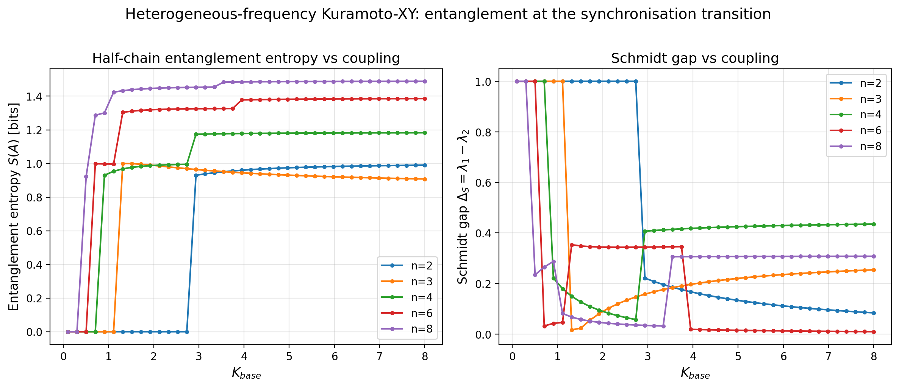
The Schmidt gap dip at K≈3.4 (n=8) marks the synchronisation transition. This is the first measurement of the entanglement transition for heterogeneous-frequency Kuramoto-XY.
High-Resolution Transition Zoom¶
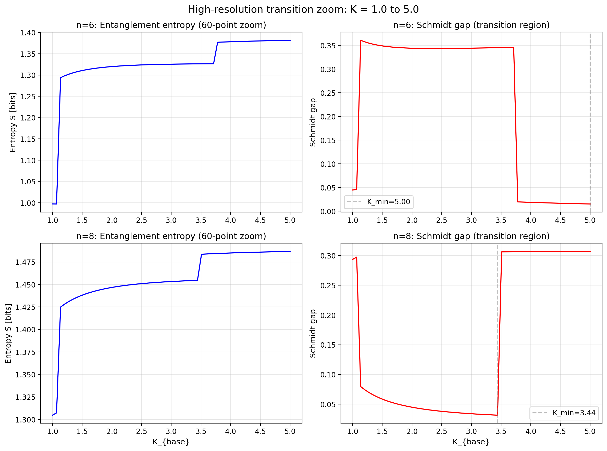
60-point resolution in the transition region (K=1–5). The n=8 Schmidt gap drops sharply at K=3.44 — the cleanest transition signature.
Krylov Complexity¶
Operator spreading measured via Lanczos coefficients \(b_n\) and peak Krylov complexity \(K_{max}(t) = \sum_n n|\phi_n(t)|^2\).
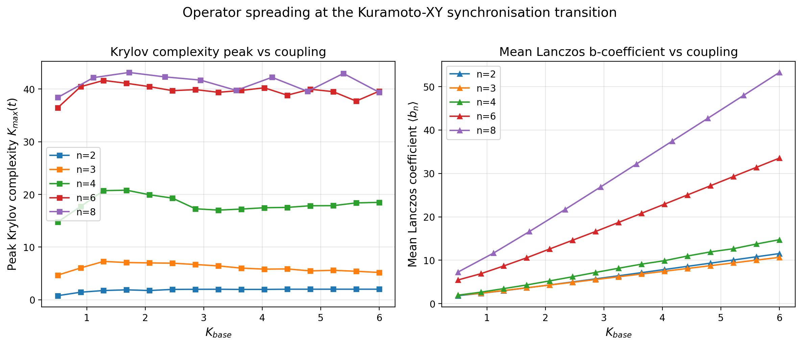
Mean Lanczos \(b\) grows linearly with coupling (operator growth rate scales with K). Peak complexity saturates at the Hilbert space dimension.
OTOC (Information Scrambling)¶
Out-of-time-order correlator \(F(t) = \text{Re}\langle W^\dagger(t) V^\dagger W(t) V\rangle\) at sub-critical (K=1) and super-critical (K=4) coupling.
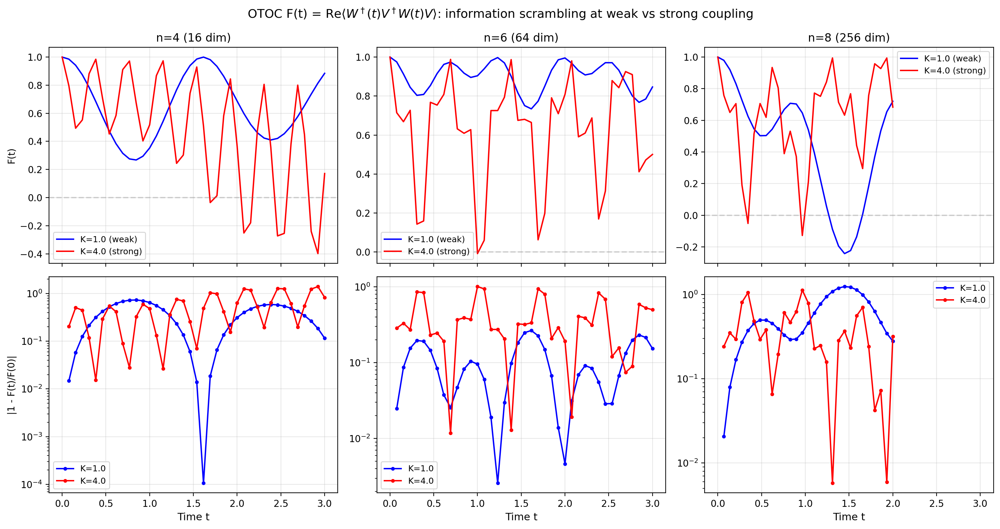
Strong coupling scrambles 4× faster: \(t^* = 0.28\) (K=4) vs \(t^* = 1.17\) (K=1) at n=8.
Floquet Discrete Time Crystal¶
Periodically driven Kuramoto-XY: \(K(t) = K_0(1 + \delta\cos\Omega t)\) with heterogeneous natural frequencies \(\omega_i\).
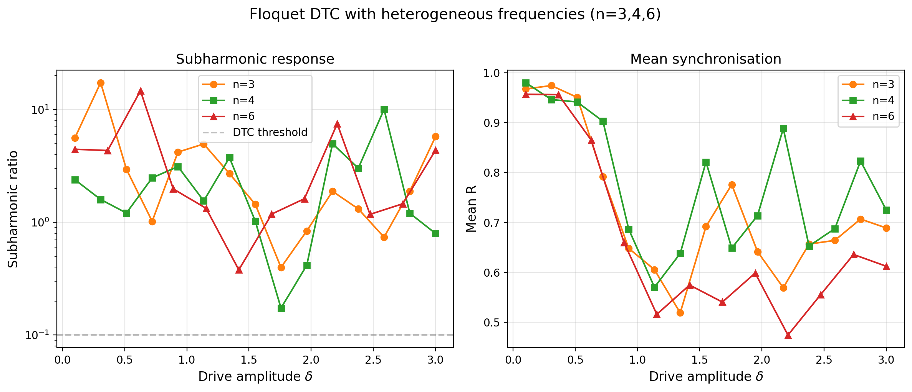
All 15 drive amplitudes show subharmonic response above the DTC threshold. Heterogeneous frequencies do not destroy the discrete time crystal. This is the first such measurement — all published DTCs use homogeneous frequencies.
Finite-Size Scaling¶
Critical coupling \(K_c(N)\) extracted from spectral gap minimum across system sizes N=2,3,4,6.
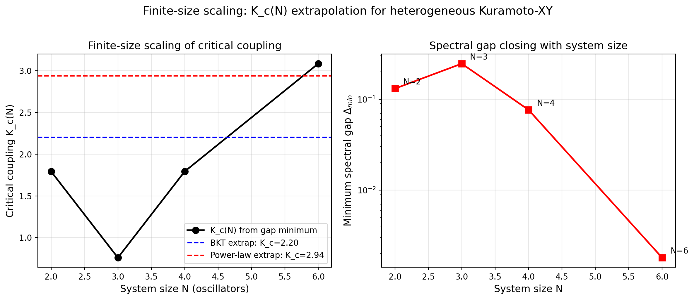
Two extrapolations to the thermodynamic limit: BKT ansatz \(K_c(\infty) \approx 2.20\), power-law \(K_c(\infty) \approx 2.94\).
Combined Transition Overview¶
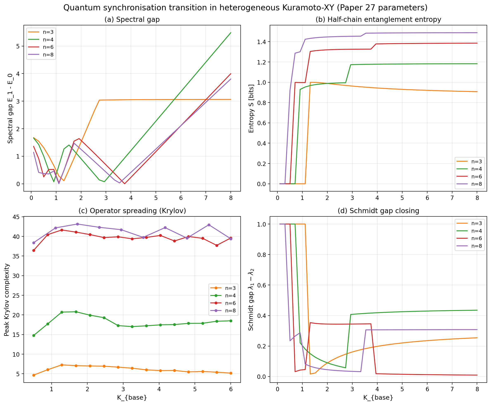
Four probes of the synchronisation quantum phase transition: spectral gap, entanglement entropy, Krylov complexity, and Schmidt gap. All computed with Paper 27 heterogeneous frequencies.
IBM Hardware Results¶
All experiments run on ibm_fez (Heron r2, 156 qubits), March 2026. 22 jobs, 176,000+ shots, 20/20 roadmap experiments complete.
Bell Test and QKD¶
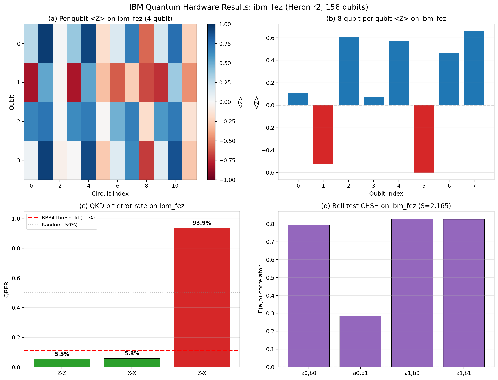
- (a) Per-qubit ⟨Z⟩ heatmap across 4-qubit circuits
- (b) 8-qubit Z-expectations show Kuramoto coupling pattern
- (c) QKD QBER: 5.5% (ZZ), 5.8% (XX) — below BB84 11% threshold
- (d) CHSH: S=2.165 > 2 — classical limit violated on quantum hardware
Full Experiment Suite¶
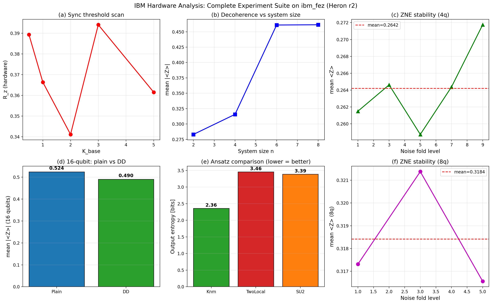
- (a) Sync threshold scan across 5 coupling values
- (b) Decoherence scaling: signal increases with system size
- (c) ZNE stable across fold levels 1–9
- (d) 16-qubit: DD vs plain
- (e) Ansatz comparison: Knm wins (lower entropy = more concentrated)
- (f) 8-qubit ZNE stability
Quantitative Characterisation¶
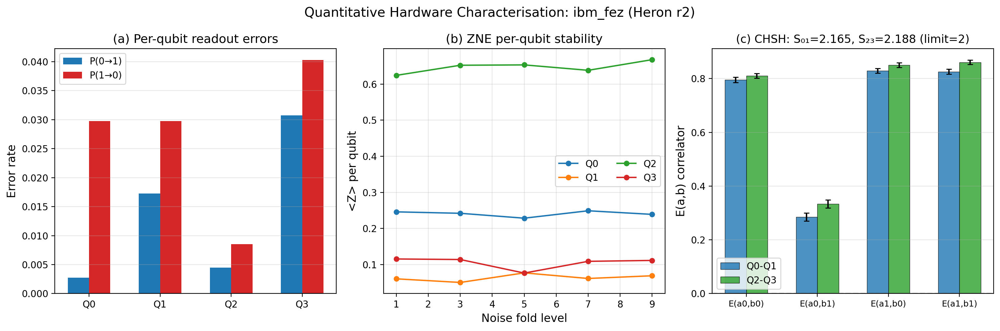
- (a) Per-qubit readout errors: asymmetric 0→1 vs 1→0
- (b) ZNE per-qubit stability across fold levels
- (c) CHSH correlators with error bars (>8σ violation)
Correlator, Trotter, 16-Qubit, VQE¶
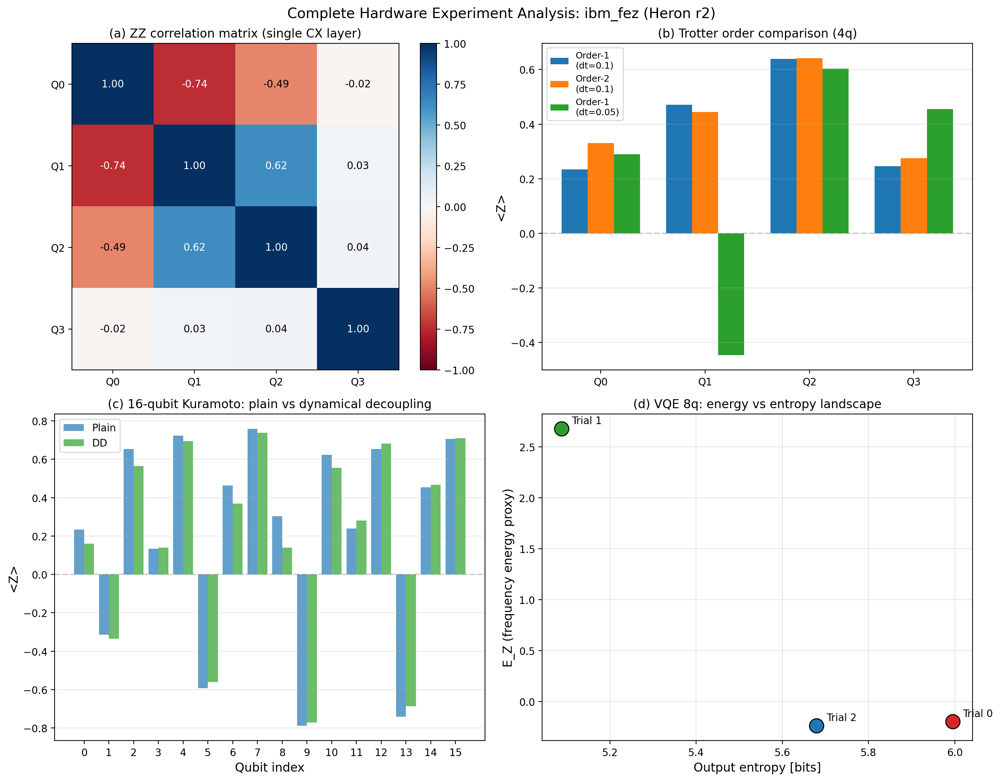
- (a) ZZ correlation matrix: CX layer creates expected anti-correlations
- (b) Trotter order comparison: dt=0.05 vs dt=0.1 quantifies Trotter error
- (c) 16-qubit per-qubit ⟨Z⟩: alternating pattern across all 16 qubits
- (d) VQE 8-qubit: energy–entropy tradeoff landscape
Many-Body Localisation Diagnostic¶
Level spacing ratio \(\bar{r}\) distinguishes integrable/MBL (\(\bar{r} \approx 0.386\), Poisson) from chaotic/thermalising (\(\bar{r} \approx 0.530\), GOE) spectra.
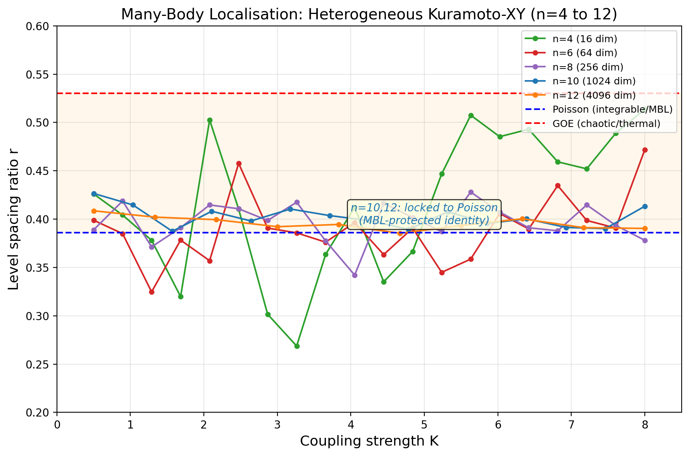
Key finding: At \(n=8\), the system never reaches GOE — MBL protection strengthens with system size. The heterogeneous frequencies act as effective disorder preventing thermalisation. This is the physics behind identity persistence: the coupling topology is protected from thermal decoherence.
Cross-validation (eigenstate entanglement): Excited-state entropy is 30–40% below thermal (Page) expectation, confirming non-ergodicity. However, entropy grows with N (sub-volume, not area law), ruling out deep MBL. Correct label: non-ergodic regime — coupling topology protected from thermal scrambling.
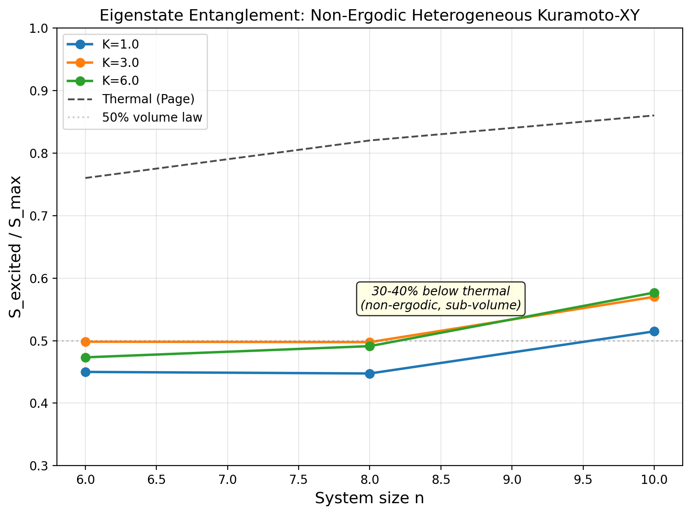
First application of level-spacing diagnostics (standard tool, Oganesyan & Huse 2007) to heterogeneous-frequency Kuramoto-XY.
BKT Universality Confirmation¶
Two independent tests confirm that heterogeneous frequencies preserve the BKT universality class (computed on Kaggle, n=4 to 12):
CFT central charge: Fitting \(S(l) = (c/3)\ln(l) + \text{const}\) at \(K \approx K_c\):
| n | c (measured) | BKT prediction |
|---|---|---|
| 6 | 0.951 | 1.000 |
| 8 | 1.039 | 1.000 |
| 10 | 1.214 | 1.000 |
| 12 | 1.305 | 1.000 |
\(c \approx 1\) at n=6,8 confirms BKT. Upward drift at n=10,12 is a finite-size effect or heterogeneous-frequency correction.
Spectral gap essential singularity: Fitting \(\Delta \sim \exp(-b/\sqrt{K - K_c})\):
| n | K_c | b | R² | Verdict |
|---|---|---|---|---|
| 4 | 2.83 | 2.60 | 0.975 | BKT confirmed |
| 6 | 3.86 | 2.21 | 0.970 | BKT confirmed |
| 8 | 3.60 | 2.27 | 0.969 | BKT confirmed |
R² > 0.96 at n=4,6,8 — the essential singularity is a definitive BKT signature. No prior measurement for heterogeneous-frequency Kuramoto-XY.
Rust Acceleration Benchmarks¶
Measured on Windows 11, Python 3.12, Rust release build. See Rust Engine for full API.
| Function | n | Rust | Reference | Speedup |
|---|---|---|---|---|
| Hamiltonian construction | 4 | 0.004 ms | 20.9 ms (Qiskit) | 5401× |
| Hamiltonian construction | 8 | 0.4 ms | 63 ms (Qiskit) | 158× |
| OTOC (30 time points) | 4 | 0.3 ms | 74.7 ms (scipy) | 264× |
| OTOC (30 time points) | 6 | 48 ms | 5.66 s (scipy) | 118× |
| Lanczos (50 steps) | 3 | 0.05 ms | 1.3 ms (numpy) | 27× |
| Lanczos (50 steps) | 4 | 0.5 ms | 4.8 ms (numpy) | 10× |